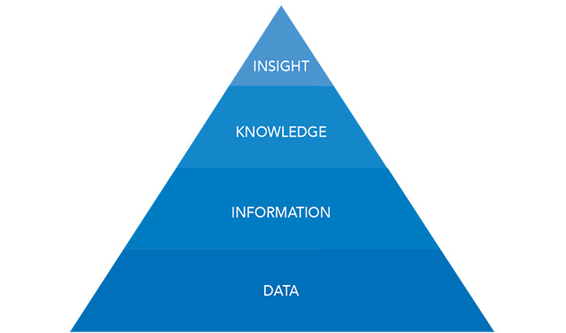
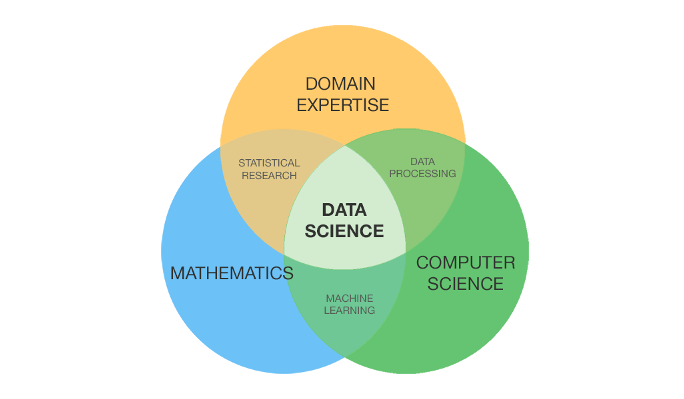
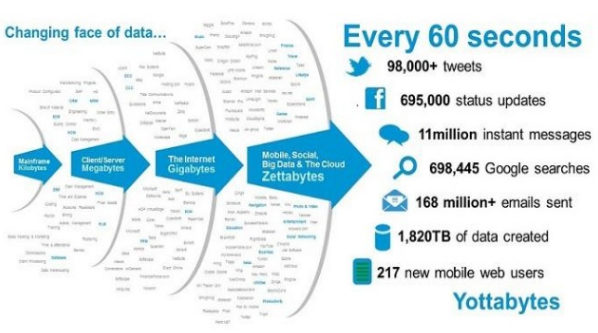
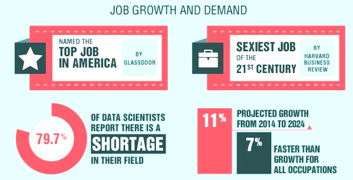
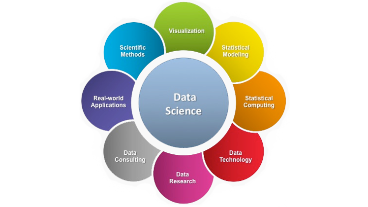
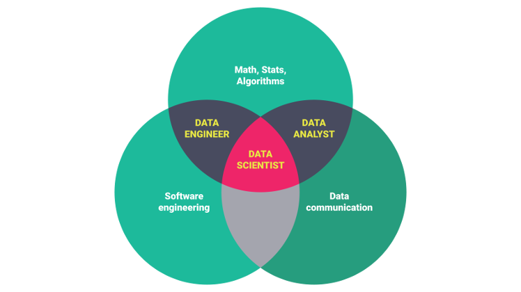
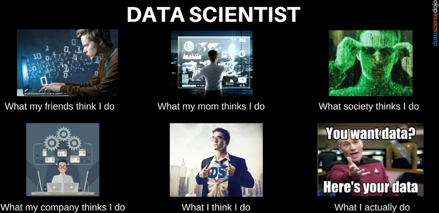

Data is all around us. From our smartphones to the business world - data is stored and used. And the best part is in its miracle. A data can drive our business, enhance our lives and helps everyone.

Embracing the value of data, the world is adopting the data-driven concept. Today, the data are building block for implementing analytics. It helps us furnish strategic vision, also use it to make better and faster decisions.
In a data-driven world, Data Science is an important skill.
But, why?
Let’s look at the Trending Job in the USA.
According to Glassdoor, data science is the number one job in America in 2018. To get insights, you might want to watch a short video featuring the importance of data science.
“This hot new field promises to revolutionize industries from business to government, health care to academia.” — The New York Times
So, are you ready to get the century sexiest job? (Yes, of course)
Before that, you may want to ask - what, how, why queries about data science.
Well, for that part we’ve written a brief article about Data Science. To make it easy to understand, we’ve broken it into following sub-topics.
- Introduction to Data Science
- Why Do We Need Data Science?
- Applications of Data Science
- Data Science Roles in Data Science
- How to become a Data Scientist?
Introduction to Data Science
You might have heard about data science, don’t you? (of course)
Before introduction about data science, we will go through basic hierarchical model of data.

Here, we have DIKI pyramid showing relationships between data, information, knowledge, and insights.
- DATA is an unorganized and raw information. It carries the unprocessed information. — FACTS and FIGURES
- INFORMATION is a processed data which has purpose and value. — WHO WHAT WHERE and WHEN
- KNOWLEDGE is an understanding of data via exploring it. — HOW and WHY
- INSIGHT is an empathy or finding a bigger picture of a scenario. — MEANING
Let’s suppose you own a restaurant. Now, your target is to maximize the profit. So, you started doing some cool things.
- First, you record the food items you sold. It’s your data.
- With your data, you’ll find numbers of food items sold. It’s an information.
- Doing further analysis, you’ll understand why certain foods are popular. That’s knowledge.
- To increase profit, you’ll deduce least sold food items with the popular one. This’s insight.
So, we can say that data science is a way of uncovering an insight from the data. When data couples with technology it can solve the complex problems and help in decision making.
Defining the Data Science
Data Science is an interdisciplinary field that combines computer science, mathematics, and domain expertise. It has wide applications in business, health, government, social sciences and many other areas.

Foundation of Data Science
So, to turn your data into meaningful insights, you need a data science team. The team who excels in the three foundation skills:
- Domain Expertise – to define the problem of a particular field.
- Mathematics – to help the understand complexity and increase the problem-solving capability.
- Computer Science – to create an environment that efficiently handles data.
Above all, the data science exists at the intersection of these three foundation skills.
1. Domain Expertise
The science behind data is about discovery and building knowledge out of it. First, you need to ask the right questions about the problem. Then, generate hypotheses that apply to data. Eventually, you can test the hypothesis with statistical methods.
Everyone wants to know, what’s going to happen with their sales. Indeed, it’s an obvious question. But, domain experts can ask more specific questions, such as the following:
- What will be our sales next week?
- Can we increase productivity in the marketing department using our sales data?
- Does this product attribute from sales data, contribute to our product sales?
Certainly, questions first then data.
2. Mathematics
In the real world, data science is about applying mathematics. Once you get and clean your data, the next process you do is pull the insight out of it. You need to apply specific math and statistical methods to address complex problems. So, mathematics is important for your data science team.
Amazingly, Data + Math = Machine Learning
Not to mention, the best teams often develop machine learning (AI) tools for predictive models. But, you don’t always need them to solve every problem.
3. Computer Science
Of course, data science happens within computer systems. The data science team members work with various computing tools (programming). Besides that, your team needs to have specific technical knowledge (data structures and algorithms).
Your team member might work with Big data, AI (Artificial Intelligence), and Databases. It requires different skill sets and processing tools. Having the right data science work environment is important as having a physical work environment.
Eventually, we can say that, data science is a team sport. As a result, your data science team needs to incorporate with skillful players. Together your team solves specific challenges and problems. This creates new opportunities and possibilities for a better world.
Why Do We Need Data Science?
Today, data is everywhere. Over the centuries, the world has generated huge amount of data.
In fact, 80% of data comes from the web in various form. From the social channels to the blogs, images, sounds, and videos.
Every minute, the world generates yotta bytes of data.

In a case study, IBM estimates 90% of the world’s data generated in the past few years. This means every day, the world creates 2.5 quintillion bytes of data.
The amounts of data are so huge that, organizations are struggling to handle it. They need technical experts to extract the powerful insights and make smarter business decisions.
To address this challenge, Data Science has emerged as hottest professions. Since 2012, the data science exploded in the data analytics industry.
According to LinkedIn’s 2017 Emerging Jobs Report, data scientist job demand has grown over 650% since 2012. It’s the same year that Harvard Business Review reported it “Sexiest job of the 21st century.”

As a matter of fact, the demand for data scientists is increasing over a short period.
McKinsey reported that by 2018, we will see 50% gap in the data scientists supply versus demand. And, the United States alone will experience a shortage of 190,000 skilled data scientists.
Hence, the data science job will continue to grow over the next decade. We think this is the right time to advance your career as data professionals.
Applications of Data Science
The world generates a huge amount of data. With data, the tech giants like Google, Amazon are making huge profitable business. Following the trend, every industry from business to retail has become data-driven.
Today, the world needs a mechanism to pull valuable insights out of data. And this mechanism is not other than data science.

With advanced technology, data science is becoming more powerful. The application of data science has a wide coverage. Some of the data science applications, we use are given below.
1. Search Engines
The most popular data science application is search engines. Daily we use search giants like Google, Yahoo, Bing, Duckduckgo, Ask, etc to search our queries. These searches are optimized with data science algorithms to deliver the best results.
Every day, Google process 20 petabytes of data. Without data science, we can’t even imagine the Google we see today.
2. Recommender Systems
From online shopping to movie watchlist, everywhere we get recommendations. Popular services like Youtube, Netflix, Amazon, Twitter, and Google are popular among us. These services all recommend their product based on search relevance and user preference. The services use search history to recommend a product.
Hence, the recommendation system makes our life easy.
3. Fraud Detection and Financial Analysis
The banks and insurance companies are implementing data science. They use it to forecast claim rates, default rates, and repayment rates.
Similarly, the authorities monitor the financial market and identify illegal trading activities.
4. Delivery logistics
Delivery service has never been so easy. From GrubHub (food) to DHL/FedEx (logistics), everyone is competitive. Their system uses data science to optimize delivery routes, operational costs, and time.
So, the customers benefit from the fastest delivery with minimal charges.
5. Healthcare
Data science transforming health care. With the historical medical data, one can predict more accurately which treatments are effective and which are not.
6. Disaster risk alert
Data Science can help us approach to identify, assess, and alert the risks of disaster. We can build models for risk from weather and disaster data (flood, wind damage). These models help us alert and prevent disaster damage from happening.
Besides that, there are lots of fields like education, natural science, economics that makes use of data science.
Data Science Roles in the Industry
In data science, there are three main career paths: data analyst, data scientist, and data engineer.

1. Data Analyst
Data analyst plays the role of a junior data scientist. It is an entry level job if you’re planning to start a career in data science.
Data analyst don’t invent new wheels, rather they use existing tools to solve the problems
Data Analyst skills:
- Programming (R, Python, SAS)
- Statistics
- Database (SQL)
- Data Wrangling (Pandas, Excel, dplyr)
- Data Visualization (PowerBI, Tableau, matplotlib, ggplot2)
Besides technical skills, data analyst also need reasoning and communication skills to be successful.
What does data analyst do?
Data analyst works under the guidance of data professionals. They do collect, process, summarise, and report the insights of data.
They make data visualization to make reports and communicate results.
2. Data Scientist
The data scientist is a senior role of a data analyst. Both data analyst and data scientist share a common goal to extract insights out of data.
But, the data scientist work on more complex problems. They work with huge data and requires advanced skills as opposed to the data analyst.
Data Scientist skills :
- Programming (R, Python, SAS)
- Mathematics and Statistics
- Machine Learning
- Big data (Apache Spark, Hive, Hadoop)
- Database (SQL, NoSQL)
- Data visualization (PowerBI, Tableau, Plotly, Matplotlib, ggplot2)
What does data scientist do?
Data scientist use data to solve business problems. A data analyst summarises the past, however a data scientist plans for the future. They use data to make strategies to solve various problems.
They create machine learning models to understand data, recognize patterns, and automate the iterative process.
3. Data Engineer
Data Engineers builds the data infrastructure for the data-driven organization. They provide a platform to retrieve the data for experiments.
Data Engineer skills:
- Big data technologies (Hadoop, Spark)
- SQL technologies (MySQL, SQL Server)
- NoSQL technologies (MongoDB)
- Data warehousing solutions
- Cloud (Microsoft Azure, Google Cloud, AWS)
What does data engineer do?
Data engineers provide an easy process to extract, transform and load data. They also help data scientist to make scalable data science products.
They help data scientist to work with big data.
Data science is a hot and emerging field of technology. The involvement in data science job is rewarding.
How to Become a Data Scientist?
Who doesn’t dream of getting the century’s sexiest job?
But, not everyone knows how to get started.
For now, let’s refresh the highlight of the data science job.
In 2018, Glassdoor has ranked Data science #1 job in the USA. And, data science job comes with a hefty salary ($110,000 per year).
Sounds interesting? (of course)

Back to topic … So, you want to get your dream job right? (Data Scientist)
Who is a Data Scientist?
Moving on, here you’ll get the step-by-step process to get started in data science. This is not the guide but these are few tips for those who aspire to become a data scientist.
- First, get basics of statistics, mathematics and machine learning
- Learn to Program (R, Python, SAS)
- Play with Database (SQL)
- Master data wrangling, visualization and analysis reporting
- Get understanding with Big Data (intermediate)
- Experience, practice and meet fellow data scientists
- Internship, Bootcamp or get a job (really important)
- Follow and engage with the data science community
Disclaimer: Don’t limit yourself by any means, think out-of-box. You need personal time and commitment to start your career in data science.
You may want to read my story about how I started my journey of data science?